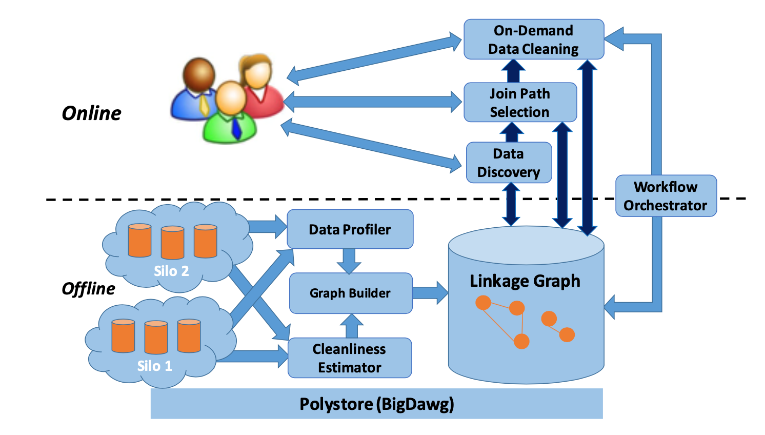
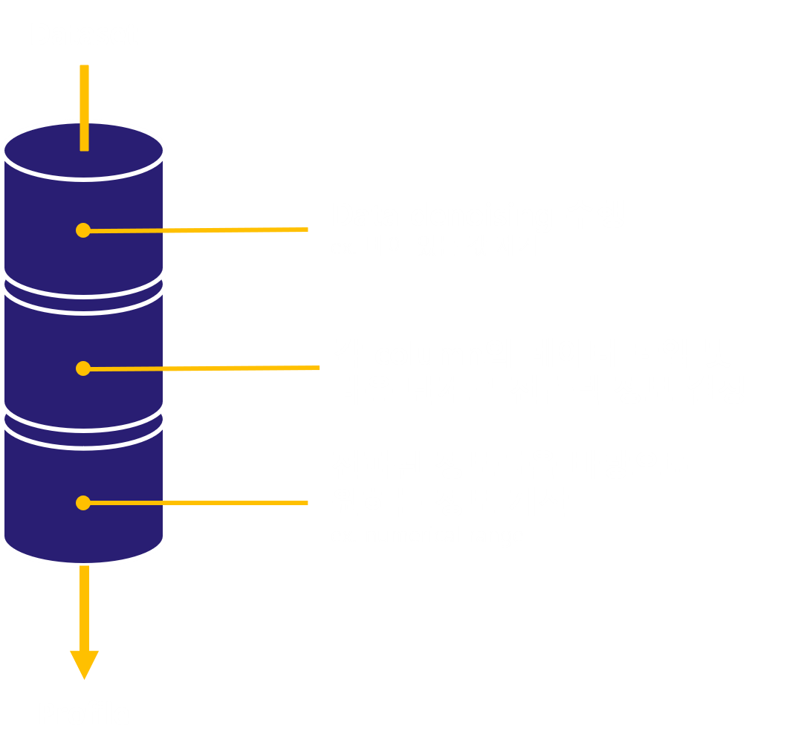
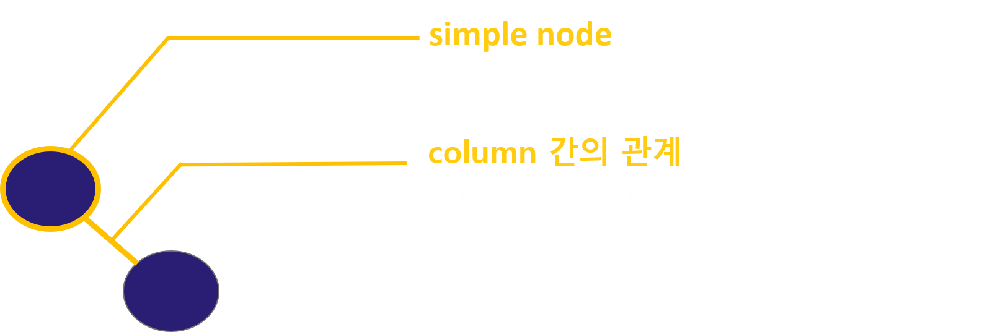
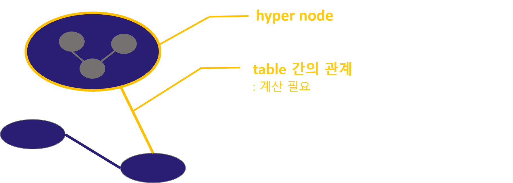
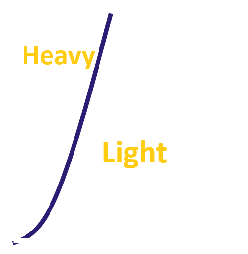
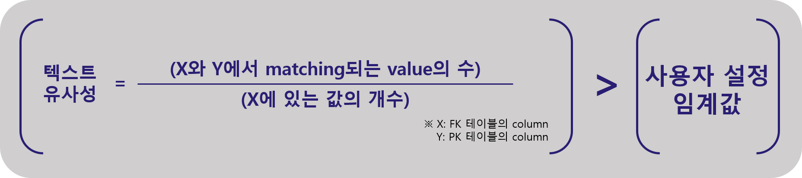
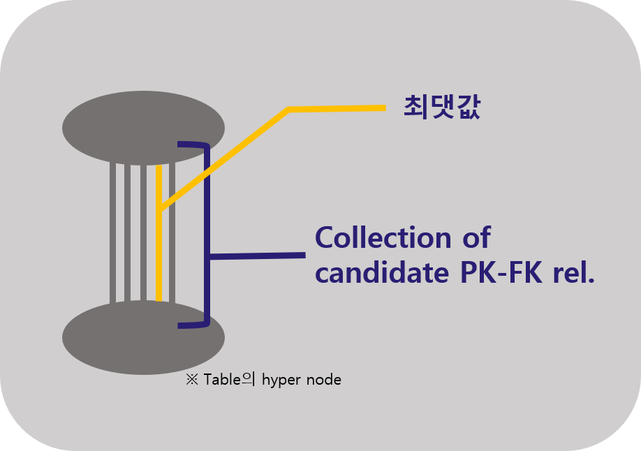
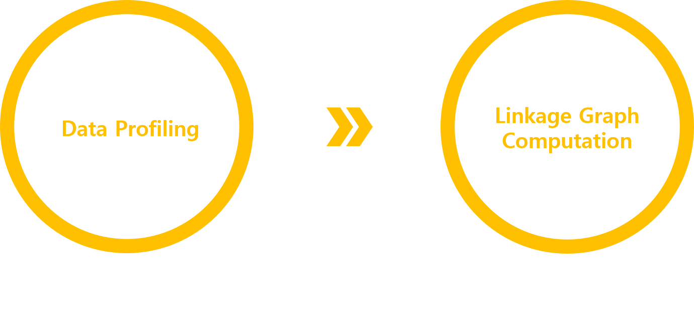
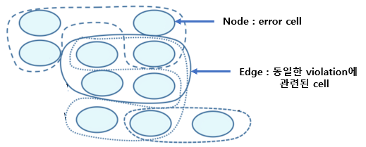

The Data Civilizer System
많은 기업에서 데이터가 기업 전반에 걸쳐 흝어져 있고, 일관성이 없는 경우가 많기 때문에 사용자가 원하는 특정 데이터를 찾는 것이 어려운 경우가 많다.
이를 해결하기위한 방법이 end-to-end 빅데이터 시스템인 Data Civilizer System이다. 수많은 테이블에서 사용할 dataset을 검색하고, 이들을 연결해,
사용자가 원하는 데이터를 계산하고, 마지막으로 원하는 데이터를 클리닝하는 작업을 거친다. 이러한 작업과정을 반복한다.

Data Civilizer는 크게 두 부분으로 구분된다.
먼저 offline component에서는 data set에 대해 profiling을 진행하고, 이 정보를 바탕으로 linkage graph를 만든다.
Online component에서는 dataset들의 검색, join path selection, cleaning 작업을 혼합하여 workflow를 실행한다.
Data Profiling and Linkage Graph
Linkage graph는 column, table, dataset 간의 관계를 나타내는 하이퍼 그래프를 말한다.
Graph를 빌드하기위해 데이터를 통계 및 요약을 하는 과정을 data profiling이라 한다.
Data profiling은 크게 single column profiling과 multiple column profile로 나뉜다.
먼저, single column profile은 각 column별 metadata로 cardinality, patterns & data types, value distirbutions, domain classification등이 포함된다.
profiling 할 데이터가 숫자인 경우 데이터를 히스토그램으로 나타내고, 텍스트 일경우 주요 단어, 자주 나오는 단어를 골라낸다.
Multiple column profile은 column간 관계에 대한 metadata로 correlations & association rules, clusters & outliers, summaries & sketches등이 포함된다.
이 외에도 데이터 타입, 숫자 범위, 칼럼명, 테이블 명등이 profile에 포함된다.

Data profiling은 data 전체가 아닌 샘플링을 가지고 profile을 진행한다. 데이터의 복제를 피하고, 메모리 압박을 줄일 수 있다. Data profiling과정은 다음과 같다.
1. Data denosing 작업: 비어있는 값 제거 등을 수행
2. 각 column의 데이터 타입을 정하고, 다음단계로 propagate될 정보들을 결정
3. 전파된 정보들을 바탕으로 원하는 정보를 계산(numerical range etc.)
Profile을 가지고 linkage graph를 구성하게 된다.

먼저, 각 column에 대해 simple node를 생성한다.
노드를 연결하는 엣지를 생성하게 되는데, 이 엣지는 column간의 관계를 나타낸다.
엣지를 만들 때 필요한 정보는 multiple column profile에서 가져온다.
각 칼럼을 나타내는 simple node를 하나의 hyper node로 묶어 테이블을 나타낸다.

Hyper node연결하는 엣지는 테이블 간의 관계를 나타내고, 이 관계에 대해서는 계산이 필요하다.

계산이 걸리는 시간에 따라 light relation과 heavy relation으로 나뉜다.
O(n^2)기준으로 더 적게 걸리는 것을 light 더 오래 걸리는 것을 heavy relation이라한다.
Light relation에는 column, schema 유사성이 포함된다. 이 유사성을 찾아 weight를 부여하는데, 이때 사용자 설정 임계값보다 작은 경우 무시한다.
유사성을 찾지 않고, Jaccare similarity((두 칼럼간 교집합)/(두 칼럼의 합집합))를 사용하여 계산할 수도 있다.
Heavy relaiton에는 PK-FK, inclusion dependecy(IND), 구조 유사성이 포함된다. Heavy relation 계산은 많은 시간을 요구하기 때문에 다음과 같은 3가지 방식을 사용한다.
1. Background에서 계산
2. Online에서 계산
3. Light relation에서 search space를 최대한 prune한 뒤 계산
이 시스템에서는 효율적으로 계산하기 위해 IND를 활용해 PK-FK 관계를 찾아내는 방식을 사용한다.
실제 데이터에는 수많은 에러와 노이즈가 존재하기 때문에, PK-FK 관계를 계산하기 전에 이들을 먼저 처리해야한다.
FK 테이블에서 PK 테이블로의 IND 관계가 성립하지 않는 경우를 에러라고 간주하고,
FK 테이블과 PK 테이블 간 텍스트 유사성을 계산하는 Error-Robust Inclusion Dependecy방식을 사용한다.

FK테이블의 칼럼 x와 PK테이블 칼럼 y의 텍스트 유사성을 계산한다 했을 때,
x와 y에서 매칭되는 값의 수를 x의 value의 수로 나눈 결과가 사용자가 설정한 임계 값을 넘었을 경우 두 칼럼에 대해 IND 관계를 추가하게 된다.

이 계산을 각 칼럼에 대해 수행하게 되면 다음 그림과 같은 PK-FK 후보 집합이 생성된다.
최대 weight를 가지는 edge를 제외하고 모두 제거하는 refine과정을 수행하게 된다.
Linkage graph build과정을 다음과 같이 정리할 수 있다.

Polystore Query Processing
사용자가 single 데이터 소스에서 사용할 수 없는 특정 칼럼 set을 포함하는 composite 테이블에 관심이 있는 경우 관련 데이터 셋을 결합하는 과정이 필요하다.
그래서 data civilizer는 여러 저장 시스템을 연합하기 위해 big data analytics working group(BigDAWG polystore)을 사용한다.
사용자가 discovery 검색 단계를 실행했고, 해당 linkage grpah의 계산이 완료되었다는 가정하에,
PK-FK 마이닝 기술을 사용하여 관심있는 테이블을 계산하기 위해 가장 적합한 join path를 선택한다.
기존의 join path selection에서는 비용에 중점을 두고 선택을 했기 때문에, data cleanliness 문제가 발생했다.
높은 품질의 결과를 얻기 위해 쿼리를 실행한 테이블과 연관된 데이터를 cleaning 해야한다.
따라서 join path selection에서는 각각의 join path의 결과에 대한 cleanliness를 추정하고,
이 cleanliness를 바탕으로 최고 효율을 갖는 데이터 cleaning 작업 위치를 결정하는 과정을 거쳐야 한다.
먼저, join path의 cleanliness를 추정하기 위해서는 각 셀의 정확도를 측정해야한다. 각 셀의 정확도는 셀이 오류가 났을 확률을 추정하는 것을 말한다. 데이터 오류의 유형에는 3가지가 있다.
1. Outlier: 같은 column에 있는 값의 분포와 거리가 먼 데이터 값
2. Duplicates: 중복 튜플들 사이 불일치 값
3. Integrity Constraint Violations: 함수 종속성과 포함 종속성을 위반한 데이터 값
각각의 유형별 error 감지 도구를 사용해 셀이 오류가 난 비율을 측정한다.

측정한 값들을 가지고 위의 그림과 같은 conflict hyper-graph로 모델링하여
각 셀의 전반적인 청결도 점수를 작성한다. Node는 에러가 발생한 셀을 의미하고, edge는 동일한 violation에 관련된 셀들을 묶어놓은 것을 의미한다.
각 셀의 청결도 값을 바탕으로 predicate에 사용되는 source cell의 청결도 값을 같은 튜플의 다른 cell에 propagate한다.
셀의 청결도는 predicate의 결과에 영향을 미치고, 같은 줄에 있는 다른 셀에도 영향을 미치기 때문이다.
결과에 영향을 주는 모든 소스 셀의 cleanliness값을 곱하여 결과 셀들의 cleanliness값을 구하고, 그 모든 셀들의 평균을 내면 join path의 cleanliness 추정값을 구할 수 있다.
Data Civilizer는 쿼리 결과 크기와 청결도를 선형결합한 기준으로 join path를 선택하게 된다.
Data cleaning 실행 위치에 따라 cleanling 비용과 결과의 품질이 달라진다.
예를 들어, 전체 테이블을 클리닝 한후 칼럼을 선택하는 것이 테이블에서 칼럼을 선택한 후 그 칼럼만 클리닝 하는 것보다 비용이 더 발생한다.
그렇기 때문에 많은 비용이 발생할 경우 가능한 작은 레코드에 클리닝 작업을 수행하면서 가능한 많은 영향을 미치도록 query planning을 하는 것이 효과적이다.
주어진 예산으로 어떤 셀부터 cleaning 할 것인지 planning 하는 과정은 다음과 같다.
- 모든 소스 테이블을 청소함으로써 관련 없는 셀에 예산을 낭비하는 것을 막기 위해 먼저 주어진 쿼리를 실행하고, 결과 셀을 소스테이블에 다시 mapping 시킨다.
- 결과에 영향을 미치는 소스 셀을 누적한다.
- 누적된 값에 따라 결과에 미치는 영향이 큰 순서부터 주어진 예산이 소진될 때까지 cleaning을 진행한다. Cleaning된 데이터는 향후 쿼리에 사용할 수 있도록 downstream 방식으로 값을 푸시한다.
Update
데이터가 변경됨에 따라 linkage graph와 profile도 업데이트 되어야 한다. 업데이트는 source table 추가/삭제, source table 교체, materialized view 3가지 유형이 있다. Data Civilizer는 업데이트를 위해 다음 3가지 방식을 사용한다.
- Grpah Update: reference couting(profile에서 키워드의 빈도수를 나타냄) schema를 사용하여, 각 키워드는 단어가 제거될때 감소되고, 카운트가 0이 될 때 프로파일에서 단어가 삭제된다.
- 데이터 출처 관리: propagation 업데이트를 위해, dataset 사이의 관계를 추적한다.
- MV 유지보수: 업데이트를 점진적으로 propagate하여 downstream MV 뿐만 아니라 가능하면 데이터 소스로 다시 정리되는 중간 결과를 업데이트한다.
Conclusion
Data Civilizer는 특정 사용자 업무와 관련된 데이터 검색, 복잡한 폴리스토어 쿼리 허용을 위한 관련 데이터 연결, 제한된 예산에 따른 데이터 클리닝, 데이터 업데이트, 데이터의 반복적인 처리를 지원하고자 하는 것이다.